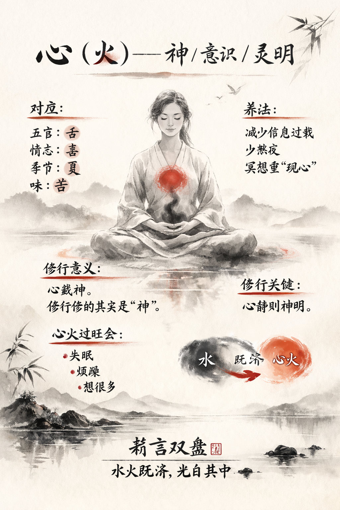

Heart
Center of rhythm and warmth, it steadies the entire system.
PulseA quiet atlas of balance
A calm landing space honoring five organs that sustain breath, rhythm, and renewal: heart, liver, kidney, spleen, and lung.
Each organ carries a different rhythm. Together they form a steady, restorative cycle that guides energy, clarity, and rest.
Center of rhythm and warmth, it steadies the entire system.
PulseKeeper of renewal, it filters, balances, and restores.
FlowGuardian of reserves, it maintains calm and endurance.
ReserveAnchor of nourishment, it transforms and distributes energy.
NourishGate of breath, it clears space and invites quiet clarity.
BreathCreate a daily moment of calm. The body listens when we do.